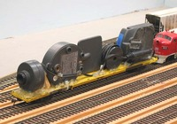
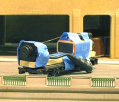

|
|
TMRC has used a variety of camera cars to shoot cab's eye view video in the past, starting out with movie cameras long, long ago (you know, the kind that used film.) From there we moved on to tethered video cameras, with the camera on one car, a battery pack on another, and a cable carrying the video signal to a VCR. More recently, we've moved on to wireless cameras, which are better in some ways, and worse in others.
The first wireless car built by the club uses an X-10 camera that has been disassembled and attached to a long flat car. Power is supplied by four AA batteries, which generally run the camera and transmitter for three or four hours. The receiver has composite video and TV output. This camera is usually attached to the front a short freight train during operating sessions, and the video sent to a TV in the club room where visitors can see it. Video quality is pretty good, but not great, with the biggest problem being intermittent bursts of static. Low light performance is poor as well. These cameras transmit sound, and can be set to one of four channels in the 2.4 GHz range (so up to four of these cameras could be run at once.) The biggest problem with a camera car like this is that it is obviously a camera car. This gives younger visitors to our open houses the bright idea to stick their hands in front of the train and wave, which has led to derailments and other mischief. It is possible to disassemble the camera and especially the transmitter housing further, which would make is possible to hide this inside a larger box car or autorack (the largest component is the transmitter board at about 2 inches square, which is too big for many freight cars and cabooses.)
The most recent wireless camera obtained by a club member was purchased off eBay. This camera is much smaller than the X10 camera, with the camera and transmitter being a cube about 1" on a side. Power comes from a 9 V battery, which lasts for several hours. This camera transmits at 1.2 GHz; there is no channel selection option. Video quality is pretty rotten, there are frequent bursts of static, and the frequency stability of the transmitter and receiver both leave something to be desired. That said, the camera is small enough to fit in places where most other cameras can't fit, like under the trolley wire. To shoot the cab's eye view video of the trolley system, the camera and battery were mounted on the chassis of an Athearn caboose which was pulled around the track in reverse by a switching engine (the video is later reversed digitally.) During open houses, this camera is mounted inside an Amfleet passenger car at the end of a train. The camera and battery fit entirely inside the car, with the lens looking out through the vestibule window at the end of the car. In this configuration it is indisinguishable from a plain Amfleet car, and it usually takes a while for visitors to figure out which car has the camera in it.
|
Tech Model Railroad Club of
MIT Room N52-118 265 Massachusetts Avenue Cambridge, MA 02139
|
+1 617 253-3269 Email: tmrc-web@mit.edu |
{kind=link}
{kind=link}